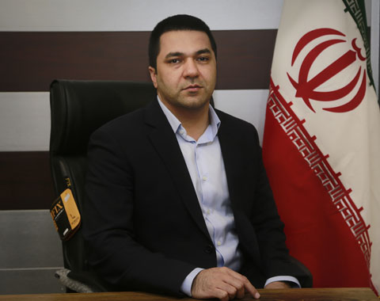

کاوه زرگران
رئیس انجمنرئیس شرکت اوپال
راهبران انجمن؛ فعالان باتجربهی صنعت غلات که مسیر انجمن را هموار میکنند.
از فعالان باسابقه صنعت غلات کشور با بیش از دو دهه تجربه در تولید، واردات و پخش نهادههای دامی است. وی مدیریت شرکت اوپال را بر عهده دارد و در دورههای مختلف عضویت هیئت مدیره انجمن، نقش مؤثری در توسعهی خدمات دادهمحور و تنظیم گزارشهای تخصصی بازار داشته است. زرگران از پیشگامان مسیر گفتوگوی سازنده میان بخش خصوصی و نهادهای سیاستگذار در حوزهی غلات شناخته میشود.
از چهرههای شناختهشدهی بازار نهادههای دامی کشور و رئیس شرکت افراست. فعالیت حرفهای او بیش از پانزده سال بر واردات، توزیع و بازارسازی ذرت و کنجالهی سویا متمرکز بوده است. او در انجمن مسئولیت هماهنگی با بانکها و نهادهای نظارتی برای رفع چالشهای ارزی اعضا را بر عهده دارد و در نشستهای تخصصی صنعت، صدای فعالان بازار است.
دبیر انجمن غلات ایران و مسئول هماهنگی اجرایی امور، برگزاری جلسات و مستندات هیئت مدیره است. او با سابقهی فعالیت در حوزهی مدیریت اداری و هماهنگی رویدادهای تخصصی، حلقهی اتصال میان اعضا، کمیتهها و هیئت مدیره است و پیگیری مستمر امور جاری انجمن را بر عهده دارد.
از تولیدکنندگان و پردازشگران فعال در زنجیرهی ارزش غلات با تمرکز بر صنایع تبدیلی است. مرتضوی در طول فعالیت حرفهای خود پروژههای متعددی در زمینهی توسعهی خطوط تولید و بهبود کیفیت محصول اجرا کرده است. او در هیئت مدیره، دغدغهی اصلی خود را ارتقای استانداردهای کیفی صنعت و توانمندسازی تولیدکنندگان داخلی میداند.
بازرگان و مشاور ارشد در حوزهی تجارت بینالملل غلات با تجربهی همکاری با شرکتهای معتبر اروپایی و آسیایی. تخصص او در بازارسازی، مذاکرات قراردادی و مدیریت ریسک نوسانات بازار جهانی است. مقدسی همچنین عضو کمیتهی داده و آمار انجمن است و در تهیهی گزارشهای تحلیلی بازار نقش دارد.
فعال حوزهی لجستیک و انبارداری محصولات کشاورزی با سابقهی اجرای پروژههای بزرگ تخلیه، حمل و نگهداری غلات در بندرها و مناطق تولیدی کشور. او بهعنوان عضو هیئت مدیره بر توسعهی زیرساختهای زنجیرهی تأمین و کاهش هزینههای تمامشدهی صنعت تمرکز دارد و در کمیتههای تخصصی انجمن فعال است.
کارآفرین حوزهی صنایع غذایی و تبدیلی با تمرکز بر محصولات مبتنی بر غلات است. احمدوند در کنار فعالیت صنعتی، در رویدادها و همایشهای آموزشی انجمن بهعنوان سخنران و مشاور حضور مییابد. دغدغهی اصلی او پرورش نیروی متخصص و انتقال دانش روز دنیا به نسل جدید فعالان صنعت غلات است.
از واردکنندگان پیشرو نهادههای دامی و دانههای روغنی با سابقهی طولانی همکاری با انجمن است. موسوی در کمیتهی بخشنامهها عضویت دارد و بهصورت مستمر پیگیر تسهیل فرایندهای قانونی تجارت غلات برای اعضاست. ارتباطات گستردهی او با نهادهای اجرایی، حلقهی اتصال انجمن و دستگاههای متولی است.